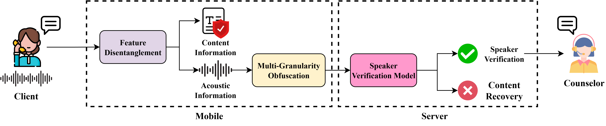

Privacy-Preserving Speaker Verification with Multi-Granularity Feature Obfuscation
Anonymous Authors
Under Review
Abstract
To address security threats such as eavesdropping arising from advancements in speech technology, this paper proposes a privacy-preserving Speaker Verification (SV) framework designed to simultaneously protect both linguistic content and biometric information. We utilize FAcodec to explicitly eliminate linguistic information from speech signals and selectively apply a Multi-Granularity Feature Obfuscation technique to non-linguistic features, preserving speaker-discriminative identity while fundamentally precluding meaningful audio reconstruction. Experimental results demonstrate superior privacy protection, achieving a Word Error Rate (WER) of 98.83% against transcription attacks. Notably, the proposed model achieved an Equal Error Rate (EER) of -%, representing a -% relative improvement over existing privacy-preserving approaches, confirming that robust speaker verification performance can be maintained even under stringent privacy constraints.

Model Architecture
Overview of the proposed SB-CFM framework for scene-conditioned Foley sound synthesis.
The model learns a velocity field that transports Gaussian noise to mel-spectrogram representations,
conditioned on scene category embeddings. HiFi-GAN is used as the vocoder to convert generated mel-spectrograms to waveforms.
Figure 1. Overall architecture of the proposed SB-CFM model.
Evaluation Results
Table 1 reports the main comparison between SafeEar and our method, and Audio Sample provides qualitative audio examples.
Table 1. Main Comparison (SafeEar vs. Ours)
Method
Codec
Obf.
EER ↓
WER ↑
CER ↑
STOI ↓
SafeEar
ST
-
3.68%
99.97%
81.74%
0.6443
SafeEar
ST
GS
5.19%
99.98%
82.06%
0.1508
Ours
FA
-
2.33%
95.56%
65.79%
0.7250
Ours
FA
GS
2.66%
99.74%
76.96%
0.2152
Ours
FA
MG
-%
98.83%
89.60%
0.3410
Audio Sample(SafeEar)
Speaker
ORIGINAL
FULL-Recon
No-Content
No-Content(GS)
TRANSCRIPTION
male-clean
He began a confused complaint against the wizard, who had vanished behind the curtain on the left.
male-noisy
Absolutely true. We're both actors. We're twins, and we work in genre sci-fi stuff a lot. So.
female-clean
It was over before it even happened. I promise you.
female-noisy
Obviously, everyone in the party had no idea. I had this earpiece in with Janice shouting down my ear.
korean-male-clean
보일러 한 시간 작동되게 틀어줘.
korean-male-noisy
앞 차량 비슷한 속도로 따라가.
korean-female-clean
오늘은 커피 안 마실 거야.
korean-female-noisy
내가 최근에 간 곳 알려줘.
Audio Sample(Ours)
Speaker
ORIGINAL
FULL-Recon
No-Content
No-Content(MG)
TRANSCRIPTION
male-clean
He began a confused complaint against the wizard, who had vanished behind the curtain on the left.
male-noisy
Absolutely true. We're both actors. We're twins, and we work in genre sci-fi stuff a lot. So.
female-clean
It was over before it even happened. I promise you.
female-noisy
Obviously, everyone in the party had no idea. I had this earpiece in with Janice shouting down my ear.
korean-male-clean
보일러 한 시간 작동되게 틀어줘.
korean-male-noisy
앞 차량 비슷한 속도로 따라가.
korean-female-clean
오늘은 커피 안 마실 거야.
korean-female-noisy
내가 최근에 간 곳 알려줘.
Rows map to source sets: English-male, English-male-noisy, English-female, English-female-noisy, Korean-male, Korean-male-noisy, Korean-female, and Korean-female-noisy.
Ablation Study 1
Table 2 reports ablation on disentangled feature combinations, followed by qualitative audio samples for English and Korean versions.